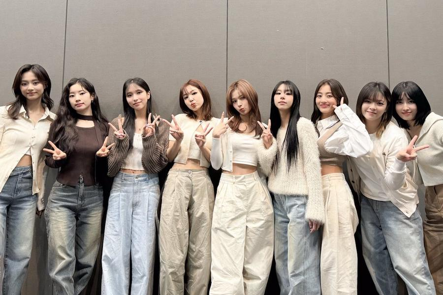
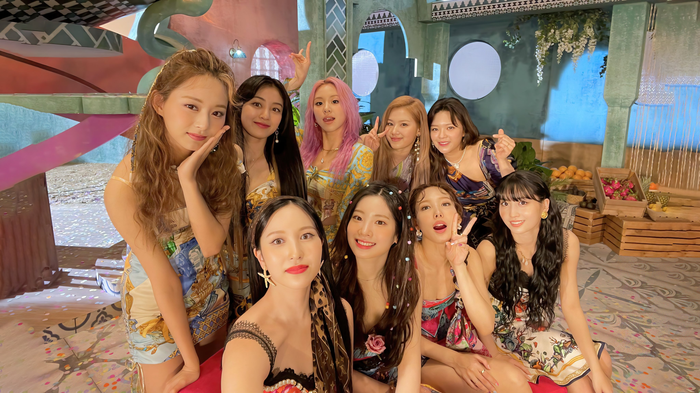

biografia
Twice é um grupo feminino sul-coreano formado pela JYP Entertainment em 2015. O grupo é composto de nove integrantes: Nayeon, Jeongyeon, Momo, Sana, Jihyo, Mina, Dahyun, Chaeyoung e Tzuyu. Twice foi formado no reality show Sixteen (2015) e estreou em 20 de outubro de 2015, com o álbum The Story Begins, com a faixa principal Like Ooh-Ahh.
curiosidades
1- O nome do fandom, Once, foi decidido pelas integrantes do grupo que dizem que basta o fã ama-las uma vez para elas amarem em dobro.
2- Por vários programas de variedades, o Twice foi considerado como o “grupo feminino da nação”.
3- O grupo é multicultural com integrantes nascidas na Coreia do Sul, Japão, Taiwan e Estados Unidos.
4- O Twice tem duas cores de fandom: Neon Magenta e Apricot.
5- A saudação do grupo é a seguinte: “um em um milhão, olá, nós somos o Twice!”.

6- O Twice foi o primeiro grupo de kpop a ter uma j-line ( linha japonesa do grupo ) que é formada por Mina, Sana e Momo, sendo chamadas de Misamo.
7- Seu nome foi escolhido pelo próprio JYP, e representa a dupla atração do grupo ao cativar o público uma vez pela música e outra pelo visual.
8- Seu debut foi no dia 20 de outubro de 2015 com a música "Like ooh-ahh".
9- A música mais famosa delas é "What is love?" com quase 1B de views em seu M/V.
10- No Sixteen, o grupo inicialmente teria apenas 7 membros, mas no final J.Y Park resolveu adicionar Momo e Tzuyu na formação final do grupo.
galeria

playlist
escute minha playlist "twice favs !" com todas as músicas do twice!
videos
para conheçer melhor as membros e rir bastante, veja Time to Twice! um reality show no Youtube muito engraçado e divertido!